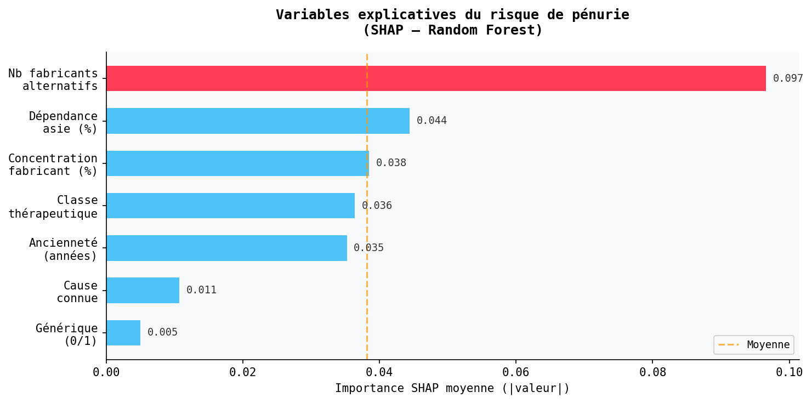
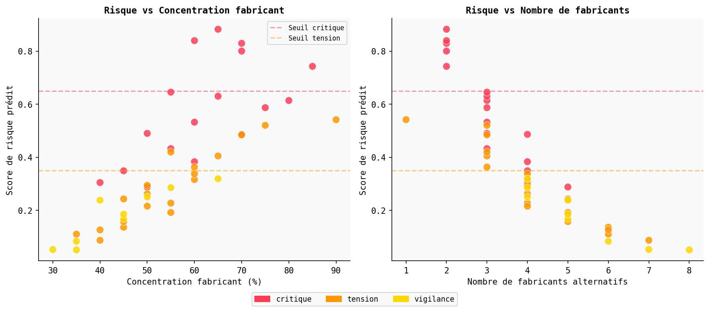
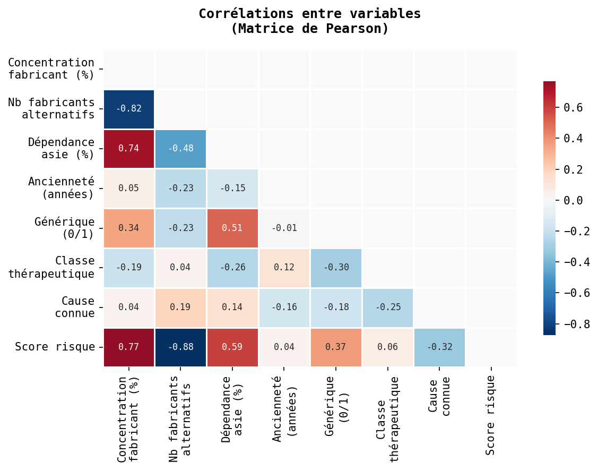
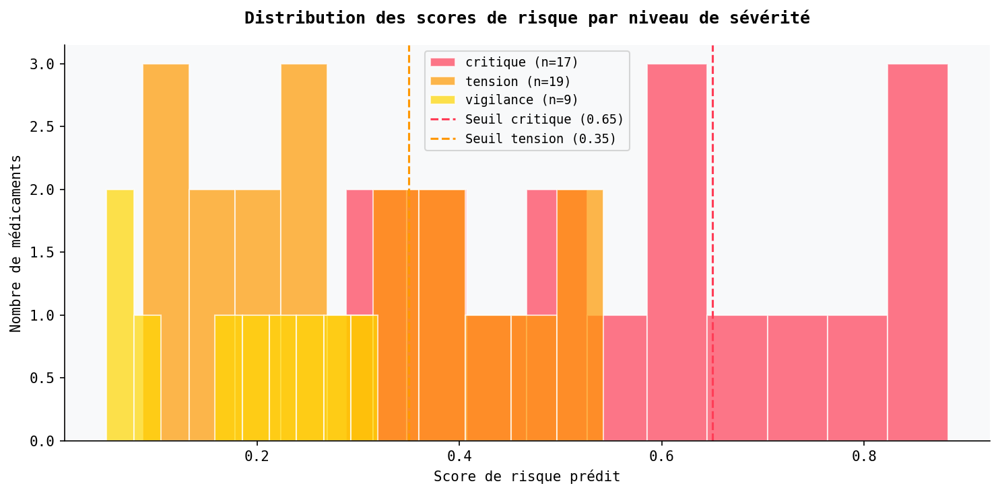

Modèle prédictif
Scoring de risque · Régression logistique · Random Forest · SHAP
Notebook interactif
Pénuromètre — Annexe analytique
Modèle d'apprentissage automatique entraîné sur 45 pénuries documentées. Le notebook reproduit l'ensemble de la chaîne : données, prétraitement, entraînement, validation croisée, scores SHAP et exports JSON vers le globe.
Performances du modèle
45
Observations
~0.84
AUC-ROC (LR)
~0.88
AUC-ROC (RF)
7
Variables
Variables explicatives
concentration_fab
Part de production concentrée chez le fabricant principal (%)
nb_fabricants
Nombre de fabricants alternatifs disponibles dans le monde
dependance_asie
Part du principe actif produit en Chine ou en Inde (%)
anciennete
Ancienneté du médicament sur le marché (années)
est_generique
Médicament générique (1) ou princeps (0)
classe_encoded
Classe thérapeutique encodée numériquement
cause_connue
Cause de pénurie historiquement documentée (1) ou indéterminée (0)
Visualisations exportées

Fig. 1 — Importance SHAP des variables

Fig. 2 — Score de risque par médicament

Fig. 3 — Corrélations entre variables explicatives

Fig. 4 — Distribution des scores par niveau de sévérité
Note méthodologique.
Le dataset comprend 45 observations issues de sources documentées (openFDA, ANSM, EMA).
Les modèles (régression logistique et random forest) sont à visée exploratoire et pédagogique.
La validation est réalisée par cross-validation stratifiée (5 folds).
Les résultats ne constituent pas une étude épidémiologique exhaustive.
Le notebook complet est reproductible sur Google Colab sans installation locale.
Références théoriques : Arrow (1963) — asymétrie d'information · Akerlof (1970) — marchés des lemons.
Références théoriques : Arrow (1963) — asymétrie d'information · Akerlof (1970) — marchés des lemons.